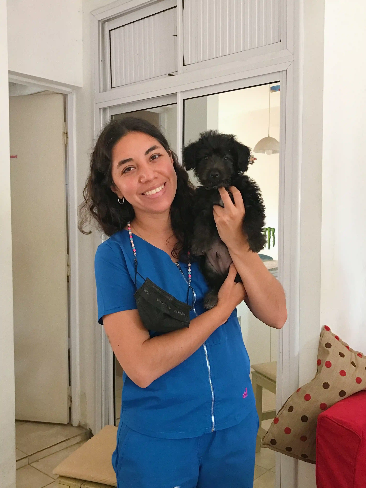

Medicina Veterinaria
"Cada paciente es único y su atención es 100% focalizada a su situación y entorno."
Prevención, bienestar y cuidados de perros y gatos en su propio hogar.

Prevención, bienestar y cuidados de perros y gatos en su propio hogar.
"Excelente profesional. Muy clara para explicar todo, puntual y cariñosa con nuestros dos perros. Un alivio contar con atención veterinaria en casa."
"Genia total Sofi. Hizo la ecografía de control con orden de derivación y se tomó todo el tiempo para que mi perra estuviera tranquila y sin miedo."
"Sofi es un amor con los animales. Vino a casa a atender a mi gata que se estresa mucho al salir, y la revisó con una paciencia y dedicación única. Super recomendable."